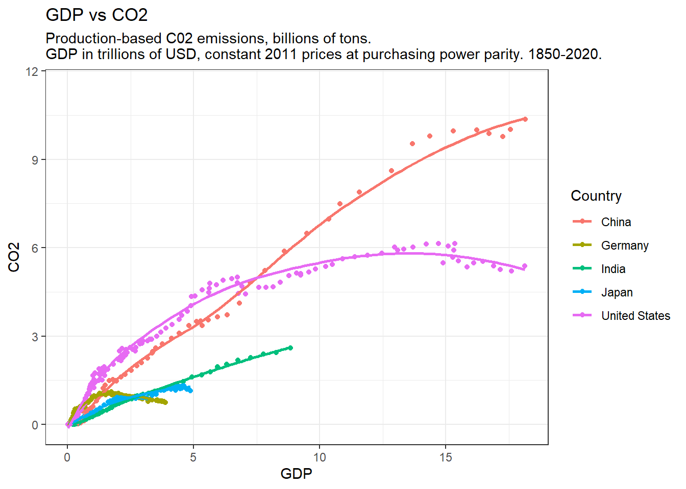
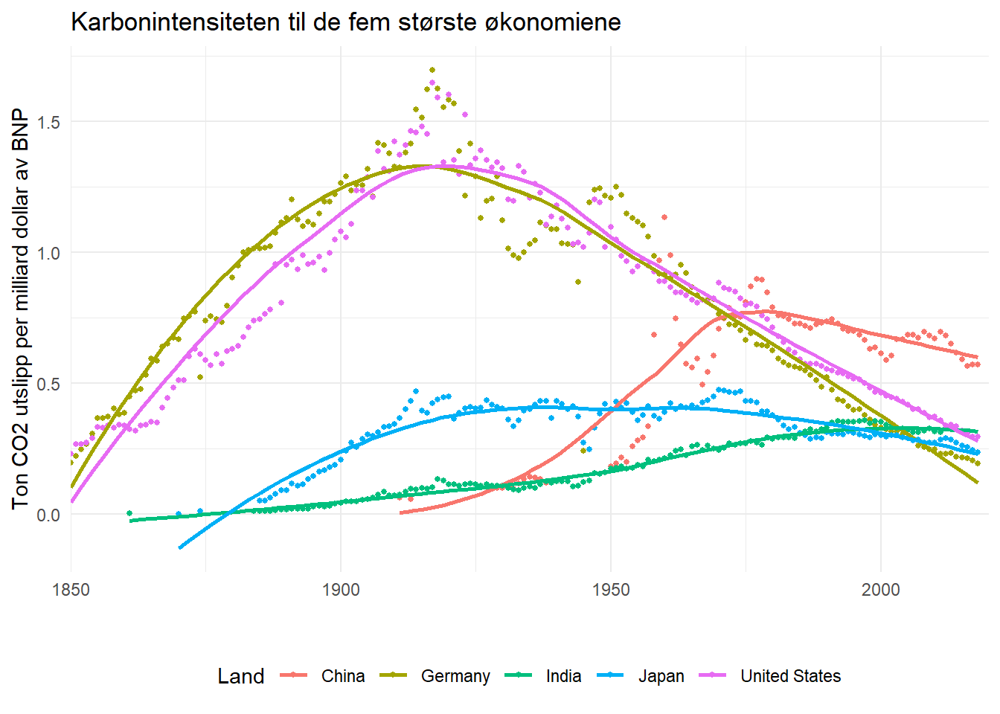
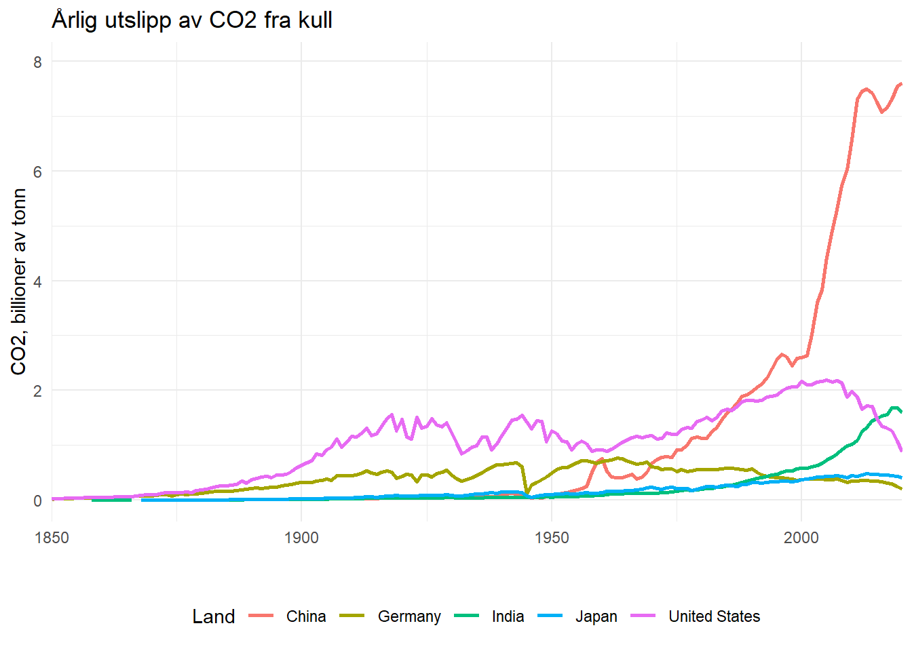
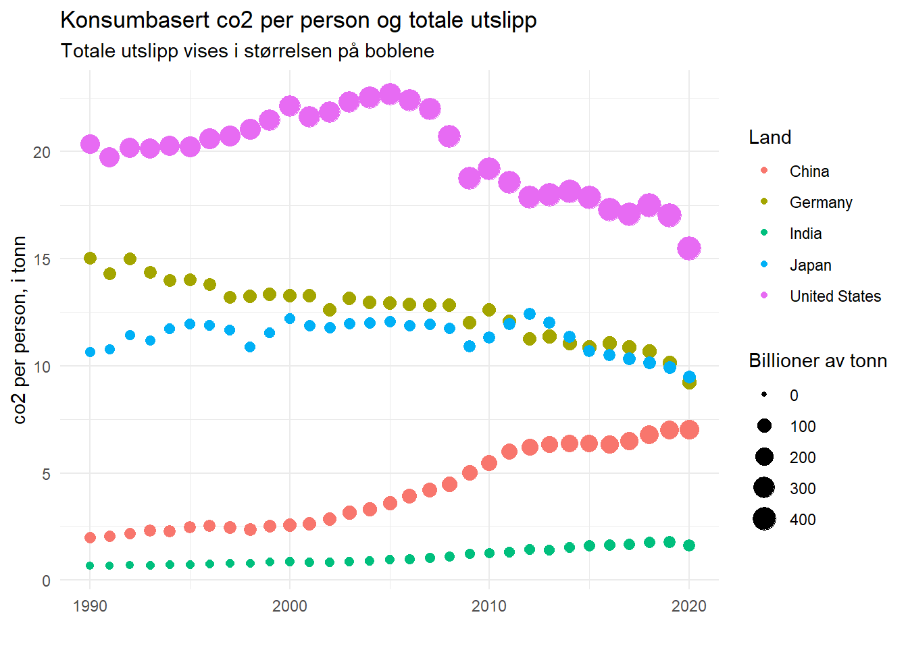
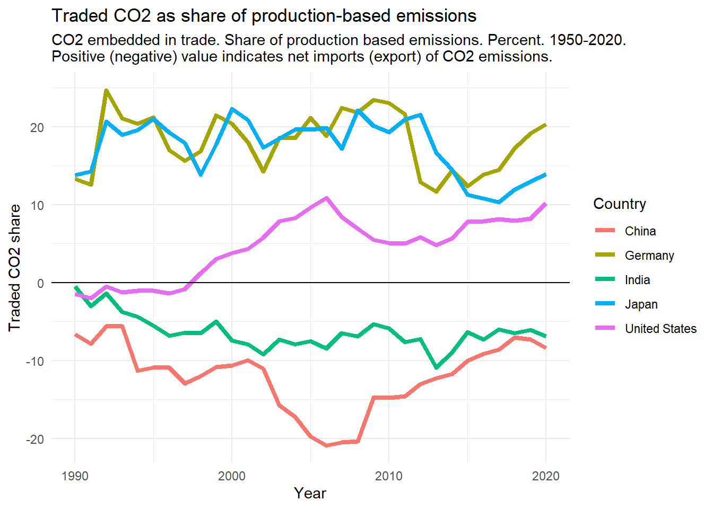

Code
rm(list=ls())
library(tidyverse)
library(dplyr)For å gå tilbake til hovedsiden trykker du her.
Denne oppgaven skal løses interaktivt i RStudio ved å legge inn egen kode og kommentarer. Det ferdige dokumentet lagres med kandidatnummeret som navn [kandidatnummer]_SOK1004_C2_H22.qmd og lastes opp på deres GitHub-side. Hvis du har kandidatnummer 43, så vil filen hete 43_SOK1004_C2_H22.qmd. Påse at koden kjører og at dere kan eksportere besvarelsen til pdf. Lever så lenken til GitHub-repositoriumet i Canvas.
Økonomisk vekst gir økt kjøpekraft og velferd. Økningen i økonomisk aktivitet har hittil blitt muliggjort gjennom å utnytte fossile energikilder som kull, olje og gass. Forbrenningen av hydrokarboner har over tid økt mengden CO2 i atmosfæren og forårsaket endringer i klimaet. Klimaendringene medfører en rekke kostnader, blant andre hyppigere og mer intense innslag av ekstreme værforhold. I den grad veksten drives av fossile energikilder er det ikke opplagt at høyere økonomisk aktivitet vil øke menneskelig velferd på sikt. Vi står ovenfor en avveining mellom økt kjøpekraft og klimaendringer.
I denne oppgaven skal vi utforske avveiningen mellom kjøpekraft og klimaendringer ved å studere sammenhengen mellom CO2-utslipp og bruttonasjonalprodukt (BNP) på tvers av land. Data henter vi fra OWID. En beskrivelse av dataene (kodebok) finnes her.
Vi skal utforske følgende: Hvilke land har høyest CO2 utslipp? Hvordan kan utslippene sammenlignes når vi tar hensyn til befolkningen og størrelsen på økonomiene? Kan bruken av kull til energiproduksjon forklare forskjellen mellom land? Hvordan stiller utslippene seg når vi justerer for internasjonal handel og skiller mellom produksjon og forbruk?
Merknad. I oppgaven definerer jeg variabler matematisk og ber dere lage figurer av de. Alle variablene finnes i datasettet. En del av oppgaven er å finne de.
rm(list=ls())
library(tidyverse)
library(dplyr)url <-
"https://raw.githubusercontent.com/owid/co2-data/master/owid-co2-data.csv"
df <- url %>%
read_csv()Vi skal studere sammenhengen mellom BNP og CO2 for de fem største økonomiene i verden, målt ved kjøpekraftjustert BNP. Disse landene er:
list <- c("China", "United States", "India", "Japan", "Germany")Betrakt følgende figur:
df %>%
mutate(gdp = gdp/10^12) %>%
mutate(co2 = co2/10^3) %>%
filter(country %in% list) %>%
ggplot(aes(x=gdp, y=co2, color = country))+
geom_point()+
geom_smooth(se = FALSE)+
labs(y = "CO2", x = "GDP", title = "GDP vs CO2", subtitle = "Production-based C02 emissions, billions of tons.
GDP in trillions of USD, constant 2011 prices at purchasing power parity. 1850-2020.", color = "Country")+
theme_bw()
Kommandoen geom_smooth() bruker en såkalt lokal regresjon til å tegne en kurve gjennom datapunktene. Dere kan tenke på dette som en gjennomsnittlig sammenheng, eller at man har tegnet en strek gjennom datapunktene med en penn.
Gi en fullstendig og nøyaktig beskrivelse av figuren. Tolk helningen på linjene og diskuter variasjon mellom og innad i landene. Drøft hvilke forhold figuren illustrerer på en god måte og hvilken informasjon som er vanskelig å tolke.
Grafen fremstiller en sammenligning mellom verdens fem største økonomier og deres produksjonsbaserte CO2-utslipp i forhold til deres kjøpekraftsjusterte brutto nasjonalprodukt (BNP). Tidsperioden som er kartlagt strekker seg fra 1850 til 2020.
Det som kan utledes fra grafen, er en tilsynelatende forbindelse mellom høyere produksjonsbaserte CO2-utslipp og et økt BNP. Likevel er det verdt å merke seg unntak, som tilfellet med USA. Her har BNP fortsatt å vokse til tross for en nedgang i produksjonsbaserte CO2-utslipp.
Grafen har imidlertid noen svakheter. Den klarer ikke nøyaktig å markere hvilke årstall som dataene representerer. Dessuten er en betydelig mengde datapunkter konsentrert i den venstre delen av figuren. Dette kunne ha vært avbildet mer effektivt med en logaritmisk skala for bedre å spre datapunktene og gjøre tolkningen mer oversiktlig.
Vi betrakter nå et normalisert mål på sammenhengen CO2-utslipp og inntekt. La \(CO2_{t}\) og \(BNP_{t}\) være henholdsvis årlige utslipp av CO2 og brutto nasjonalprodukt i år \(t\). Vi måler \(CO2_{t}\) i kilogram og \(BNP_{t}\) i kjøpekraftjusterte USD ved faste 2011-priser. Vi kan definere karbonintensiteten i produksjon som \(CI_{t}=CO{2}_{t}/BNP_{t}\), altså antall kilogram CO2 per USD i verdiskapning.
Lag en figur som viser karbonintensiteten \(CI_{t}\) til de fem største økonomiene (navnene er lagret i variabelen list over) fra 1850 til 2020. Sammenlign \(CI_{t}\) med helningen fra figuren i oppgave Ia. Gi en fullstendig og nøyaktig beskrivelse av figuren. Drøft minst to forhold som du tror kan være av avgjørende betydningen for å forklare variasjonen innad og mellom land.
df %>%
mutate(ci = (co2/10^3)/(gdp/10^12)) %>%
filter(country %in% list) %>%
ggplot(aes(x=year, y=ci, color=country)) +
theme_minimal() +
geom_point(size=1.1) +
geom_smooth(se=FALSE) +
scale_x_continuous(limits=c(1850, 2020), expand=c(0,0)) +
labs(title= "Karbonintensiteten til de fem største økonomiene",
y="Ton CO2 utslipp per milliard dollar av BNP",
color="Land", x="") +
theme(legend.position = "bottom")
Grafen illustrerer en sammenligning mellom verdens fem største økonomier, der den spesifikt fremhever forholdet mellom produksjon av CO2 (i kilogram) per produsert dollar i brutto nasjonalprodukt (BNP).
Et viktig aspekt som grafen viser, er effekten av befolkningsvekst, økonomisk vekst og introduksjonen av alternative energikilder over tid. Alle de representerte landene viser en generell nedadgående trend i forholdet mellom kg CO2-utslipp per produsert dollar i BNP, noe som indikerer en økende effektivitet og/eller bruk av mindre karbonintensive teknologier.
Spesielt er det bemerkelsesverdige endringer i enkelte land som Kina og Tyskland. I Kina observeres en markant økning i karbonintensitet og produksjon etter et betydelig skifte i landets regjeringsstruktur. Samtidig ser vi i Tyskland en kraftig reduksjon i både produksjon og CO2-utslipp per dollar av BNP under landets involvering i andre verdenskrig.
Disse trekkene understreker hvordan både økonomiske og politiske endringer kan ha dype innvirkninger på et lands karbonavtrykk og deres forhold til den globale økonomien.
Undersøk hvorvidt bruken av kull som energikilde kan forklare forskjellen i karbonintensitet mellom de fem største landene. Lag to figurer og 100-200 ord med tekst. Husk å gi en fullstendig og nøyaktig beskrivelse av figurene.
Figur 1
df %>%
mutate(coal_co2 = coal_co2/10^3) %>%
filter(country %in% list) %>%
ggplot(aes(x=year, y=coal_co2, color=country))+
geom_line(size=1)+
scale_x_continuous(limits=c(1850, 2020), expand=c(0,0))+
labs(title= "Årlig utslipp av CO2 fra kull", x="",
y="CO2, billioner av tonn",
color="Land")+
theme_minimal()+
theme(legend.position = "bottom")
Figur 1 fremstiller det årlige karbonutslippet fra verdens fem største økonomier, målt i billioner tonn. Kina skiller seg markant ut med en betydelig vekst i karbonutslipp siden årtusenskiftet, noe som hovedsakelig kan tilskrives landets økende bruk av kull som energikilde.
df %>%
mutate(ci = (co2/10^3)/(gdp/10^12)) %>%
filter(country %in% list) %>%
ggplot(aes(x=year, y=ci, color=country))+
theme_minimal()+
geom_point(size=1.1)+
geom_smooth(se=FALSE)+
scale_x_continuous(limits=c(1850, 2020), expand=c(0,0))+
labs(title= "Karbonintensiteten til de fem største økonomiene",
y="Ton CO2 utslipp per milliard dollar av BNP",
color="Land", x="") +
theme(legend.position = "bottom")På den andre siden gir Figur 2 en detaljert fremstilling av karbonintensiteten i produksjonen i disse fem landene. Det er verdt å merke seg at Japan, Tyskland og USA viser en nedadgående trend både i bruk av kull som energikilde og i CO2-utslipp per produsert dollar i BNP.
I kontrast til dette, viser India og Kina en økende trend i bruk av kull som energikilde, noe som reflekteres i deres økende CO2-utslipp. Selv om dette ikke nødvendigvis resulterer i en markant økning i kg CO2 per dollar av BNP, kan dette i stor grad tilskrives det faktum at disse to landene har betydelig større befolkninger. Dermed vil det totale utslippet være større, selv om utslippet per innbygger eller per produsert dollar av BNP kanskje ikke øker i samme grad.
I den foregående analysen har vi slått fast at Kina har høy karbonintensitet i produksjon og at kullforbrenning står for en høy andel av deres utslipp. I hvilken grad kan utslippene knyttes til eksportrettet produksjon? I dataene fra OWID har de variable som de kaller konsumbaserte utslipp, for eksempel variabelen consumption_co2.
Forklar hvordan konsumbaserte CO2-utslipp er konstruert og hvordan vi skal tolke den.
Konsumbaserte CO2-utslipp er en beregning av nasjonale eller regionale CO2-utslipp, der man tar hensyn til inn- og utgående handel. Dette gir et mer nøyaktig bilde av et lands faktiske karbonfotavtrykk ved å vurdere karbonutslippet fra både det de produserer selv og det de forbruker gjennom import.
Når et land produserer varer som genererer store mengder CO2 og deretter eksporterer disse varene, reduseres landets konsumbaserte CO2-utslipp tilsvarende. Det vil si at CO2-utslippet som er tilknyttet produksjonen av disse eksporterte varene, ikke regnes som en del av det eksporterende landets konsumbaserte utslipp.
På den annen side, hvis et land importerer varer som genererer store mengder CO2 i løpet av produksjonen, legges disse utslippene til i det importørende landets konsumbaserte CO2-utslipp. Dette gjenspeiler at selv om landet kanskje ikke selv produserer store mengder CO2, bidrar det indirekte til global oppvarming gjennom sitt forbruk av importerte varer.
På denne måten gir konsumbaserte CO2-utslipp et mer nyansert og komplett bilde av et lands bidrag til globale CO2-utslipp, ved å vurdere både nasjonal produksjon og internasjonal handel.
Lag en figur som viser utviklingen av konsumbasert CO2 per person og totale, konsumbaserte utslipp. Gi en fullstendig og nøyaktig beskrivelse av figuren og forklar hva den viser.
Hint: Hvis du bruker geom_point() så kan spesifisere én av variablene ved tilvalget size i aes().
df %>%
mutate(cumulative_co2= cumulative_co2/10^3) %>%
filter(country %in% list) %>%
ggplot(aes(x=year, y=consumption_co2_per_capita,
color=country, size=cumulative_co2))+
geom_point()+
scale_x_continuous(limits=c(1990, 2020))+
labs(title = "Konsumbasert co2 per person og totale utslipp", subtitle="Totale utslipp vises i størrelsen på boblene", y="co2 per person, i tonn", size="Billioner av tonn", colour="Land", x="")+
scale_size_continuous(labels = scales::comma)+
theme_minimal()
Grafen fremstiller mengden konsumbaserte CO2-utslipp per innbygger i hvert land, målt i tonn. Det er viktig å merke seg at utslippene som er inkludert her, kun gjelder nasjonale eller regionale utslipp, det vil si at de ikke tar hensyn til CO2 knyttet til eksporterte varer.
Størrelsen på hvert punkt på grafen representerer det totale volumet av CO2-utslipp for det aktuelle landet, uttrykt i milliarder tonn per år. Igjen er dette kun basert på utslipp som skjer innenfor landets grenser, og ekskluderer utslipp som er knyttet til produksjon av varer for eksport.
Dermed gir figuren et visuelt bilde av hvert lands interne produksjon av CO2, både på en per person basis og som en total årlig sum, og tillater dermed for en sammenligning av de relative CO2-utslippene mellom forskjellige land.
Betrakt følgende figur, og gi en konkret forklaring på hva den viser.
df %>%
filter(country %in% list) %>%
ggplot(aes(x=year, y=trade_co2_share, color = country))+
xlim(1990,2020)+
geom_line(size = 1.5)+
geom_hline(yintercept=0)+
labs(x = "Year", y = "Traded CO2 share", title = "Traded CO2 as share of production-based emissions", subtitle = "CO2 embedded in trade. Share of production based emissions. Percent. 1950-2020.
Positive (negative) value indicates net imports (export) of CO2 emissions.",
color = "Country")+
theme_minimal()
Figuren illustrerer handel mellom forskjellige økonomier uttrykt i CO2-utslipp. Den gir innsikt i hvilke land som i hovedsak eksporterer CO2-genererende varer, og hvilke land som i stor grad importerer slike varer.
Som figuren tydelig viser, fungerer Kina og India i stor grad som nettoeksportører av CO2, det vil si at de produserer og eksporterer varer som fører til betydelige CO2-utslipp. Amerika, derimot, fungerer stort sett som en importør av CO2, bortsett fra en kort periode på 1990-tallet.
Japan og Tyskland viser en større tendens til å importere CO2-genererende varer enn å eksportere dem. Y-aksen på grafen illustrerer nettoeksport eller nettoimport av CO2 i prosent.
Verdier under null på y-aksen indikerer at et land er en nettoeksportør av CO2, mens verdier over null indikerer at et land er en nettoimportør av CO2. På denne måten gir figuren et klart bilde av CO2-utslipp knyttet til global handel, og hvilke land som bidrar mest til disse utslippene, enten gjennom produksjon eller forbruk.
NB: All tekst i kursiv er forbedret via AI som hjelpemiddel.
For å gå tilbake til hovedsiden trykker du her.